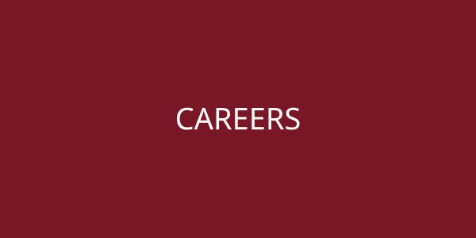

Career Coaching
One-on-one coaching and mock interviews.
Meet coachesCareer coaching, internships, career fairs, and job search tools for Voiland College students.
Who we serve: In-person support for Pullman and Bremerton students; remote support for students at other WSU campuses.

One-on-one coaching and mock interviews.
Meet coachesEarn credit for a paid internship.
Learn moreDates, prep, and FAQs.
See fairsRésumés, interviews, job search.
Open toolkitTips and news.
Read